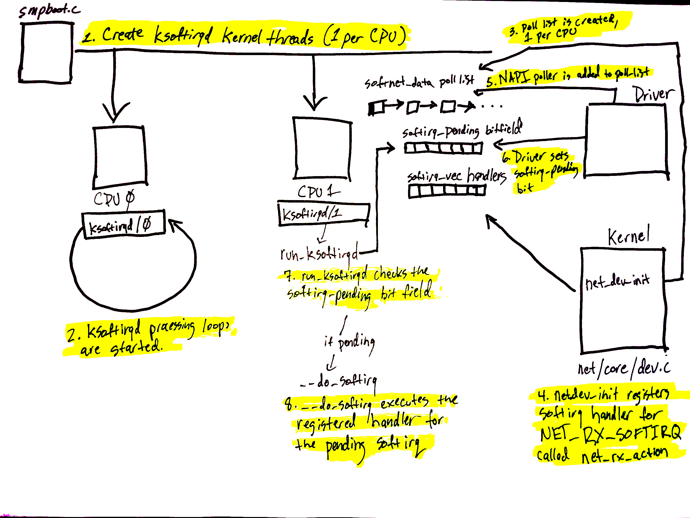
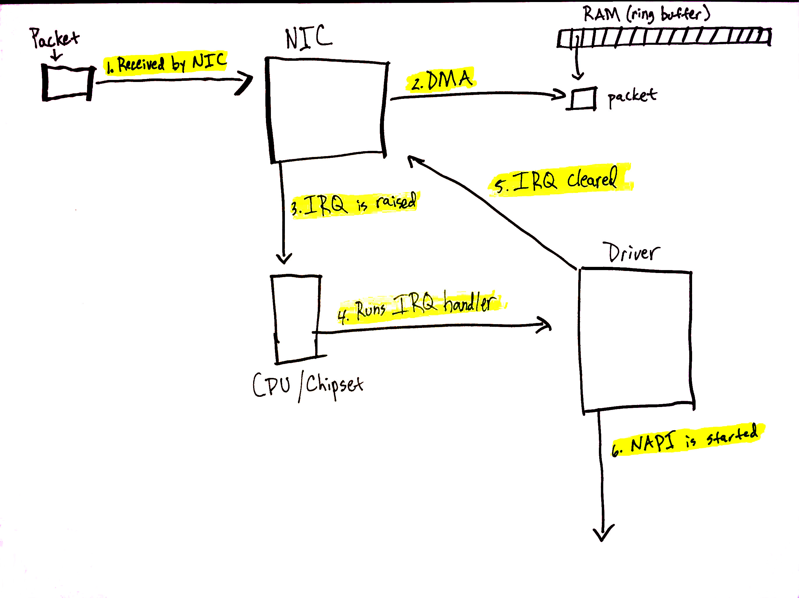
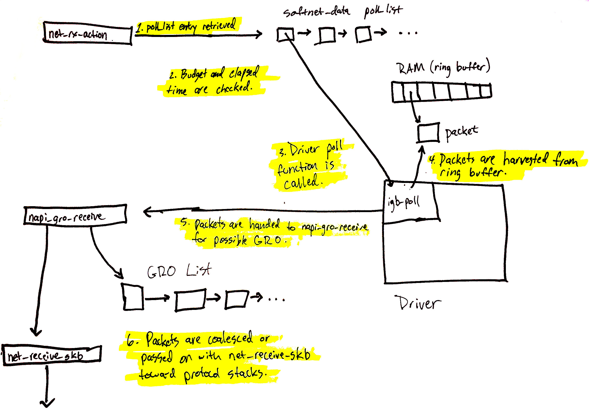
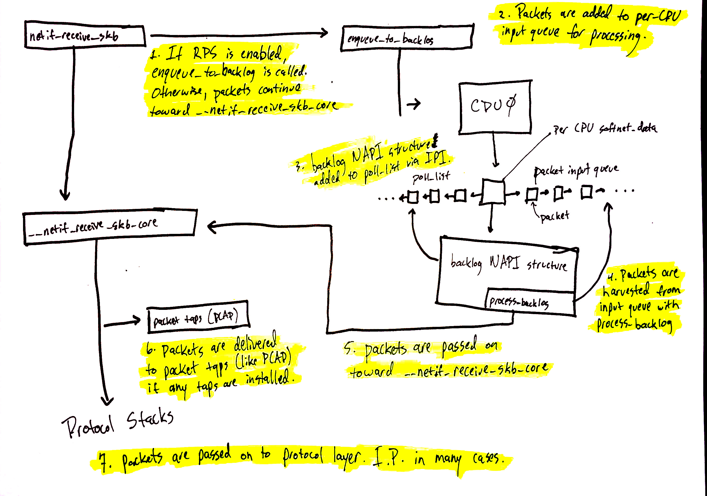

图文指南：Linux 网络堆栈监控和优化 —— 接收数据
前言
最近在学习 Rust 编写 Linux 网卡驱动时，发现了一篇有关网卡的精彩文章。英文原文请见此处。今天我将它翻译成中文，与大家分享。
这篇博客文章在之前的博客文章《监控和优化 Linux 网络堆栈：接收数据》基础上，通过一系列图表深入解释了 Linux 网络堆栈的工作原理，旨在帮助读者更清晰地了解其运作方式。
在监控或调整 Linux 网络堆栈方面，没有捷径可走。运维人员必须努力全面了解各个子系统及其相互作用，才能有望调整或优化它们。然而，之前的博客文章篇幅较长，可能让读者难以理解各个系统之间的交互关系。希望这篇博客文章能有助于澄清这些问题。
入门
这些图表旨在概述 Linux 网络堆栈的工作原理。因此，许多细节并未包括在内。为了获得完整的画面，读者们被鼓励阅读我们的一篇博客文章，其中详细介绍了网络堆栈的每个方面：监控和优化 Linux 网络堆栈：接收数据。这些绘图的目的是帮助读者在高层次上构建一个内核中某些系统之间互动的思维模型。
让我们首先看一下在理解数据包处理之前必要的的重要设置。
初始设置

设备有多种方式警告计算机系统的其他部分准备处理的工作。在网络设备的情况下，网卡通常会 raising IRQ 信号，表示数据包已到达并准备好处理。当 Linux 内核执行 IRQ 处理程序时，它以非常高的优先级运行，通常会阻止生成额外的 IRQ。因此，设备驱动程序中的 IRQ 处理程序必须尽可能快地执行，并将所有长时间的工作推迟到这个上下文之外执行。这就是为什么存在软 IRQ系统的原因。
Linux 内核中的软 IRQ系统是内核用于在设备驱动程序 IRQ 上下文之外处理工作的系统。在网络设备的情况下，软 IRQ 系统负责处理传入的数据包。软 IRQ 系统在内核启动过程的早期进行初始化。
上面的图表与我们网络博客文章中的软 IRQ 部分相对应，展示了软 IRQ 系统的初始化和其每个 CPU 的内核线程。
软 IRQ 系统的初始化如下：
- 在
kernel/softirq.c中的spawn_ksoftirqd函数中创建软 IRQ内核线程（每个 CPU 一个），并通过调用kernel/smpboot.c中的smpboot_register_percpu_thread函数来注册。在代码中，可以看到run_ksoftirqd函数被列为线程函数，这是将在循环中执行的函数。 ksoftirqd线程在run_ksoftirqd函数中开始执行其处理循环。- 然后，为每个 CPU 创建一个
softnet_data结构。这些结构持有处理网络数据的重要数据结构的引用。我们后面会看到的是poll_list。设备驱动程序通过调用napi_schedule或其他NAPI API将NAPI轮询worker结构添加到poll_list中。 net_dev_init然后通过调用open_softirq注册NET_RX_SOFTIRQ 软 IRQ，如所示。注册的处理程序函数是net_rx_action。这是软 IRQ内核线程将执行的处理数据包的函数。
图表中的步骤 5-8 与准备处理的数据包到达有关，将在下一部分提到。请继续阅读！
数据到达流程

数据从网络到达！
当网络数据到达网卡时，网卡将使用 DMA 将数据包写入内存。在 igb 网络驱动程序的情况下，它在内存中设置了一个环形缓冲区，该缓冲区指向接收到的数据包。需要注意的是，一些网卡是“多队列”网卡，这意味着它们可以将接收到的数据包写入内存中的多个环形缓冲区。如我们将看到的，这样的网卡能够利用多个处理器处理到来的网络数据。了解更多关于多队列网卡的信息。上述图表仅显示了一个简化的单一环形缓冲区，但根据您使用的网卡和硬件设置，您的系统上可能会有多个队列。
在网络博客文章的这一部分中，详细介绍了以下过程。
让我们详细了解数据接收过程：
- 网卡从网络接收数据。
- 网卡使用 DMA 将网络数据写入内存。
- 网卡产生 IRQ。
- 设备驱动程序注册的 IRQ 处理程序被执行。
- 在 NIC 上清除 IRQ，以便它可以为新的数据包到达产生 IRQ。
- 调用
napi_schedule启动 NAPI 软 IRQ 轮询循环。
调用 napi_schedule 触发前图中步骤 5-8 的开始。如我们将看到的，NAPI 软 IRQ 轮询循环是通过在位字段中切换一位并将结构添加到 poll_list 中来简单启动的。napi_schedule 没有执行其他工作，这就是驱动程序将处理推迟到软 IRQ 系统的精确方式。
继续查看上一部分的图表，并使用那里找到的数字：
- 驱动程序调用
napi_schedule时，将驱动程序的 NAPI 轮询结构添加到当前 CPU 的poll_list中。 - 设置
softirq等待位，以便该 CPU 上的ksoftirqd进程知道有数据包需要处理。 run_ksoftirqd函数（由ksoftirq内核线程以循环方式运行）执行。- 调用
__do_softirq，检查pending位字段，发现softIRQ等待，并调用注册的等待softIRQ的处理程序：net_rx_action，它负责处理到来网络数据的全部工作。
值得注意的是，执行 net_rx_action 的是 softIRQ 内核线程，而不是设备驱动程序的 IRQ 处理程序。
网络数据开始处理流程

已将驱动程序的 NAPI 结构添加到当前 CPU 的 poll_list 中。Poll 结构通常在以下两种情况下添加：
- 从调用
napi_schedule的设备驱动程序。 - 在接收数据包转向（RPS）的情况下，使用进程间中断（IPI）。了解更多关于如何使用 IPI 处理数据包的信息。
我们现在将介绍从 poll_list 中检索驱动程序的 NAPI 结构时会发生什么。（下一节将介绍如何使用 IPI 注册 RPS 的 NAPI 结构。）
上述图表在这里进行了详细解释，但可以总结如下：
net_rx_action循环首先检查NAPI poll列表中的 NAPI 结构。- 检查预算和流逝时间，以确保软 IRQ 不会独占 CPU 时间。
- 调用注册的 poll 函数。在本例中，igb 驱动程序注册了
igb_poll函数。 - 驱动程序的 poll 函数从内存中的环形缓冲区收集数据包。
- 数据包传递给
napi_gro_receive，它将处理可能的通用接收卸载。 - 数据包是保留用于 GRO，或者传递给
net_receive_skb，使其向上进入协议堆栈。
接下来，我们将介绍 net_receive_skb 如何处理接收数据包转向，以在多个 CPU 之间分配数据包处理负载。
网络数据继续处理流程

网络数据处理继续从netif_receive_skb开始，但数据的路径取决于是否启用接收数据包引导（RPS）。默认情况下，Linux内核未启用RPS，如果您想要使用它，需要显式启用和配置。
在RPS禁用的情况下，使用上述图表中的数字：
netif_receive_skb将数据传递给__netif_receive_core。__netif_receive_core将数据交付给任何tap（如PCAP）。__netif_receive_core将数据交付给已注册的协议层处理程序。在很多情况下，这是IPv4协议堆栈注册的ip_rcv函数。
在RPS启用的情况下：
netif_receive_skb将数据传递给enqueue_to_backlog。- 数据包放置在
per-CPU输入队列中以供处理。 - 将远程
CPU的NAPI结构添加到该CPU的poll_list中，并排队IPI，如果远程CPU上的软中断内核线程尚未运行，则触发唤醒。 - 当远程
CPU上的ksoftirqd内核线程运行时，它遵循前一节的相同模式，但这次，注册的poll函数是process_backlog，从当前CPU的输入队列中收获数据包。 - 数据包传递给
__net_receive_skb_core。 __netif_receive_core将数据交付给任何tap（如PCAP）。__netif_receive_core将数据交付给已注册的协议层处理程序。在很多情况下，这是IPv4协议堆栈注册的ip_rcv函数。
协议堆栈和用户态套接字
接下来是协议堆栈、netfilter、伯克利数据包过滤器，最后是用户态套接字。这条代码路径较长，但线性且相对简单。
您可以继续跟随网络数据的详细路径。该路径的简要高层次概述如下：
- 数据包由
IPv4协议层使用ip_rcv接收。 - 执行
netfilter和路由优化。 - 将目标数据传递给较高层次的协议层，如
UDP。 - 数据包由
UDP协议层使用udp_rcv接收，并通过udp_queue_rcv_skb和sock_queue_rcv将其放入用户态套接字的接收缓冲区。在放入接收缓冲区之前，处理伯克利数据包过滤器。
请注意，在整个过程中多次查询
netfilter。详细位置可在我们的详细解析中找到。
总结
Linux 网络堆栈非常复杂，有许多不同的系统相互交互。调整或监控这些复杂系统时，必须努力理解它们之间的相互作用，以及更改其中一个系统的设置如何影响其他系统。
这篇（不佳）绘图的博客文章试图使我们的长篇博客文章更具可读性和易于理解。
未完待续
以上就是关于《图文指南：Linux 网络堆栈监控和优化 —— 接收数据》的全文，希望这些知识能对您有所帮助。祝大家玩得开心 ^_^
如果您喜欢这篇文章，欢迎关注微信公众号《猿禹宙》、点赞、转发和赞赏。每一位读者的认可都是我持续创作的动力。